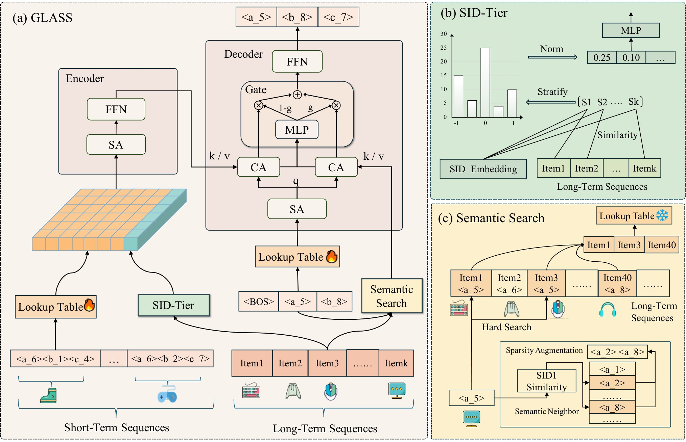

目录 · 7 节
1问题：长历史怎么进生成式召回2整体结构3第一层码：SID-Tier 把长期历史压成一个 token4后两层码：用生成的第一层码去长期历史里检索5检索回来的物品太少怎么办6实验7局限和可以做的事生成式推荐把物品编码成几层 Semantic ID（SID），再用 Transformer 一个码一个码地生成下一个物品。注意力计算量随序列长度平方增长，所以这类模型通常只吃最近几十条行为。论文用的两个数据集里，用户平均历史长度是 987（TAOBAO-MM）和 884（KuaiRec），模型输入却只截最近 50 条。作者还观察到一个现象：普通生成式召回在第一层码生成之后，真实物品在 beam 里的排名不升反降，第二层平均名次变差 1.25。论文提出的方法 GLASS 按 SID 的层级分开用长期历史。生成第一层码之前，它把整段长期历史压成一个兴趣 token 送进编码器；第一层码生成之后，拿它当检索键，从长期历史里取出同一大类的物品，辅助生成后两层码。在 TAOBAO-MM 上，R@1 比最强基线 DualGR 高 21.57%；短视频平台两周 A/B 中，人均使用时长 +0.052%，召回率绝对提升 3 个百分点。
1. 问题：长历史怎么进生成式召回
排序阶段处理长序列有成熟做法，就是 SIM 的两段式：先用 GSU（General Search Unit）按目标物品从长历史里检索相关子序列，再交给 ESU（Exact Search Unit）做精细的 target attention。召回阶段没有目标物品，GSU 不知道该拿什么去检索。OneRec、OneSearch 用 Q-Former（一组可学习的 query 向量通过 attention 从整段历史里汇总信息）把长期行为压成固定个数的隐向量，这些向量刻画的是用户偏好哪几类兴趣，细不到具体物品。DualGR 已经把 SID 当检索键用在生成式召回里，但它对所有层级的码一视同仁。
作者的出发点是 SID 本身的结构。第一层码决定物品属于哪个大类，后两层码在这个大类里定位具体物品。生成第一层码时还没有任何路径，模型需要的是用户在各个大类上的整体偏好；生成后两层码时大类已经定了，需要的是用户在这个大类里具体点过什么。两层需要的长期信息粒度不同，所以分两处注入。
2. 整体结构

主干是 TIGER 式的编码器-解码器。物品的多模态向量经 RQ-VAE 量化成三层码，公开数据集上码本大小是 [64,128,128]，embedding 维度 96，编码器和解码器各 4 层。用户历史按时间排序后切成两段：最近 50 条是短期序列，更早的全部算长期序列。
3. 第一层码：SID-Tier 把长期历史压成一个 token
这一步解决“第一层码生成时没有任何线索”的问题。直接对长期历史做注意力太贵，作者利用了一级码本很小这一点：一级码只有几十到一百多个，用户历史和每个码之间的交叉特征可以全部算出来。
先给每个一级码 一个原型向量 ，取所有第一层码为 的物品向量的平均。然后把余弦相似度区间 $[-1,1]$ 等分成 档，对每个一级码统计长期历史里落在每一档的物品数：
是历史物品 的多模态向量， 把相似度映射到档位， 是指示函数。直觉上， 描述的是“用户历史里有多少物品和大类 很像、有多少一般像、有多少不像”。把所有一级码的直方图拼起来，长度是 ，过一个 MLP（隐层 256）压成一个 维向量 ，拼在短期序列 embedding 后面一起送进编码器。
这个 token 只依赖用户历史和码本，和要生成的物品无关，可以离线提前算好。它其实就是排序模型里常见的“用户对类目的历史偏好统计特征”，换成了在 SID 一级码上算。
4. 后两层码：用生成的第一层码去长期历史里检索
第一层码 生成之后，模型从长期历史里取出第一层码相同的所有物品：
这相当于 SIM 的硬检索，检索键从“目标物品的类目”换成了“刚生成的第一层码”。解码器每层先做自注意力，再并行做两路 cross attention：一路以编码器输出为 key/value，得到 ；一路以检索回来的物品 embedding 为 key/value，得到 。两路用门控合并：
是 的投影矩阵， 是 sigmoid。 大，结果偏向检索到的长期物品； 小，偏向短期序列。训练目标是三层码的标准自回归交叉熵。
5. 检索回来的物品太少怎么办
硬检索有个直接的问题。按论文的例子，历史长度 1000、一级码本 128 时，每个一级码平均只能取回约 7.8 个物品，信息太少，噪声占比又高。作者给了两种补法：
- 语义邻居补充：预先算出一级码之间的余弦相似度，给每个码记下 top-k 个最近邻。检索结果少于阈值 时，把邻居码对应的历史物品也并进来。
- 缩小一级码本：训练时就把一级码本调小，让每个一级码覆盖更多物品。第一层负责“多”，后两层负责“准”。
6. 实验
主实验要证明 GLASS 比 ID 类序列模型和 SID 类生成式模型都好。两个数据集都只保留正反馈：TAOBAO-MM 取点击，并从商品里均匀采样 1 万个、只留训练集中出现至少 5 次的；KuaiRec 取播放时长超过视频时长的样本。下表从论文表 2 摘了最强的 ID 模型 HSTU 和两个 SID 基线：TIGER 是标准生成式召回，DualGR 用长短期两路分支加路由。
| 数据集 | 模型 | R@1 | R@5 | R@10 | N@10 |
|---|---|---|---|---|---|
| TAOBAO-MM | HSTU | 0.0274 | 0.0512 | 0.0784 | 0.0495 |
| TAOBAO-MM | TIGER | 0.0280 | 0.0756 | 0.1076 | 0.0627 |
| TAOBAO-MM | DualGR | 0.0306 | 0.0781 | 0.1126 | 0.0653 |
| TAOBAO-MM | GLASS | 0.0372 | 0.0934 | 0.1284 | 0.0782 |
| KuaiRec | HSTU | 0.0334 | 0.0845 | 0.1183 | 0.0704 |
| KuaiRec | TIGER | 0.0406 | 0.0859 | 0.1202 | 0.0751 |
| KuaiRec | DualGR | 0.0445 | 0.0932 | 0.1292 | 0.0821 |
| KuaiRec | GLASS | 0.0467 | 0.0971 | 0.1345 | 0.0855 |
KuaiRec 上的提升只有 3.81%–4.94%。作者的解释是 KuaiRec 的多模态向量来自简单的文本编码，SID 质量差，而 TAOBAO-MM 用的是对比学习训出来的多模态特征。
消融实验说明两个模块管的是不同的层：SID-Tier 主要帮第一层码，语义检索主要帮第二层码。作者看两个量：teacher forcing 下第 层码的训练准确率 ，以及前面各层都对时第 层码在 top-1 beam search 下也对的概率 。加上 SID-Tier 后，第一层的这两个量都有提升，Recall@5 也从 0.0702 升到 0.0842，说明第一层码更准直接带来了召回提升。再加语义检索，主要抬高的是 和 。

作者还解释了正确答案的名次为什么会往下掉。他们定义了条件名次（CRP）：只看前 $d-1$ 层码都留在 beam 里的样本，算第 步时正确的前 层前缀在 beam 的 top-K 候选里排第几，再取平均，越接近 1 越好。beam 按整条路径的累积概率排序，这是 beam search 的常规做法；论文没有说明正确前缀掉出 top-K 时怎样计入。beam 大小为 20 时，普通生成式模型到第二层，正确码的名次平均变差 1.25 位，加上语义检索后只变差 0.98 位，第三层也有类似的改善。原因是普通模型生成后两层码时，条件上下文还是开头那一份，没有新信息去拉开正确答案和干扰项的概率差距；语义检索恰好补上了这份新信息。
门控是有用的。固定权重 0.5 在一级码本小的时候有提升，码本变细后反而变差，因为检索结果的长度波动很大，太短时噪声会直接进入 beam search 的累积概率。学习到的门控值随检索长度整体上升，检索到的物品越多，模型给长期分支的权重越高。

两种补救检索稀疏的办法里，缩小一级码本拿到了最高的 Recall@10。语义邻居补充只在不缩码本时有效；码本已经缩小时再加邻居，指标略降，作者认为是邻居带进来的物品模糊了不同兴趣之间的边界。
线上实验是在一个短视频平台上做的两周 A/B，实验组和对照组各占 3% 的用户，约 1200 万人。使用时长只涨了约 0.05%，但在这么大的流量上统计显著，召回率则绝对提升了 3 个百分点（论文没有说明线上召回率以什么为真值、在多大的召回集合上算，只能当作方向性的信号）。
7. 局限和可以做的事
论文没有单独讨论局限，有两点事实要注意。一是公开数据集规模偏小：KuaiRec 只有 3790 个用户，TAOBAO-MM 的物品被采样到 1 万个，和工业级码本的规模差很远。二是效果对 SID 质量很敏感：在 SID 质量好的 TAOBAO-MM 上，各指标比最强基线高 14%–30%，到了 SID 质量差的 KuaiRec 上只高 4% 左右。
如果你在做生成式召回、又有长行为序列，有两件事可以直接试：
- 把“用户对一级码的历史偏好直方图”当作一个额外 token 拼到编码器输入里，它可以离线算，线上几乎不增加开销。
- 用生成出的第一层码做硬检索之前，先统计一下每个一级码在用户历史里平均能取回多少物品；太少就先考虑缩小一级码本，再考虑邻居补充。
讨论
欢迎补充实验细节、复现经验或不同看法。需 GitHub 登录。
正在加载讨论…